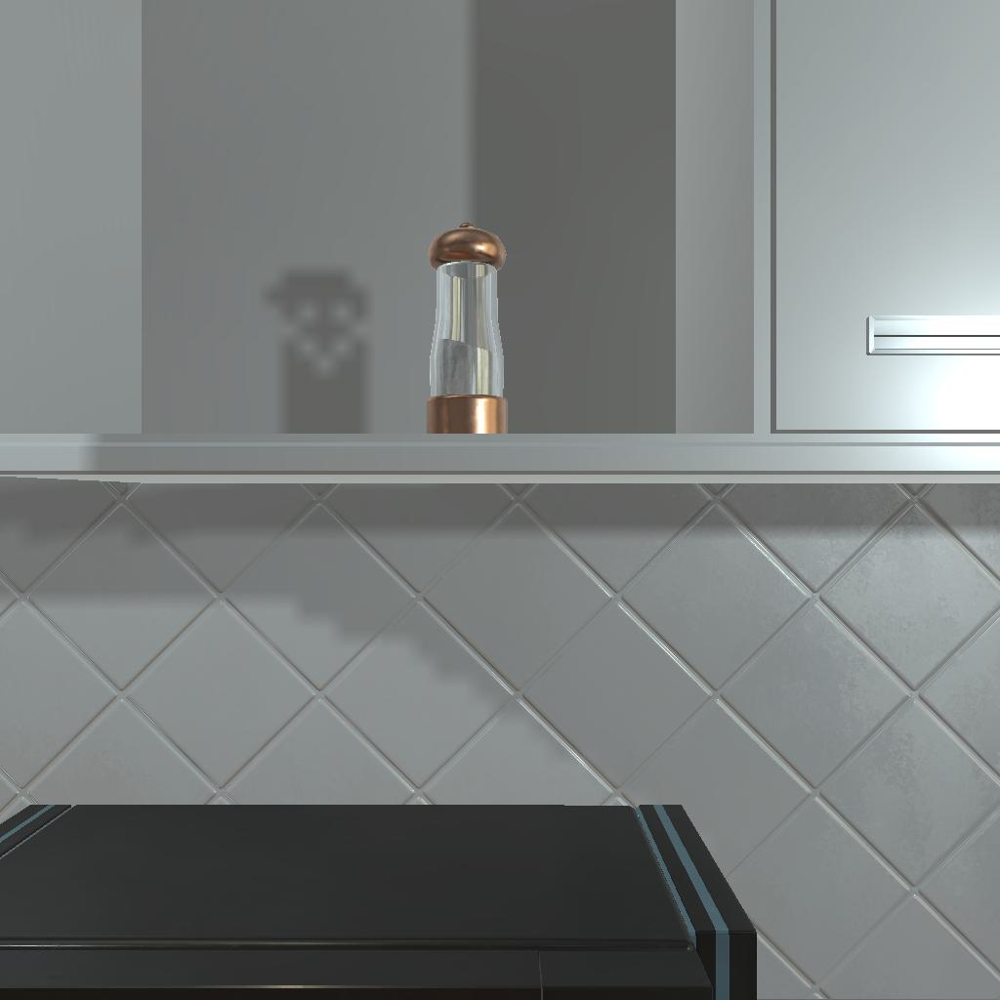
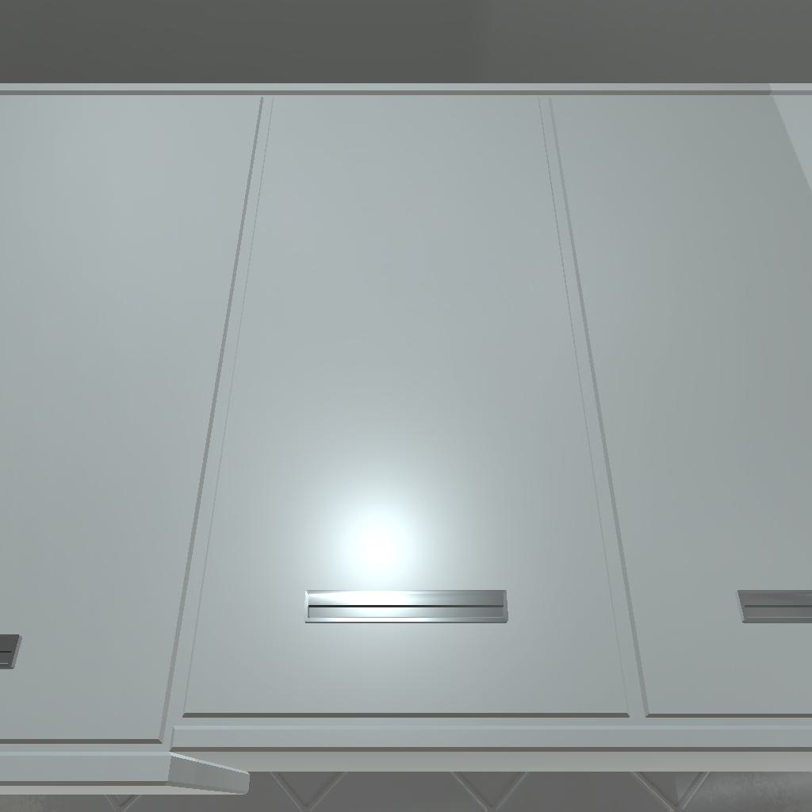

---------------------------------------------------------task: 21---------------------------------------------------------
--------------------------------------------------------------------------------------------------------------------------------------------------------------------
--------------------------------------------------------------------------------------------------------------------------------------------------------------------
Step:--------------------------------------------------------------------------11-------------------------------------------------------------------------------
----------------------------------------
VLM Prompt:
Image1:
Image2:
**Instruction**
1. Analyze the provided images to identify all visible household objects and compare the difference between images (e.h. whether the object is opened or not and taken on hand or not), focusing on those relevant to the task description "put a hot cup in countertop."
2. Use the analysis of images and the task hint "The agent must find an object of the desired type, pick it up, go to a microwave, heat the object with the microwave, then find the correct location to place it, and put it down there. The agent does not need to use the microwave button or open the microwave to heat the object, and the agent just needs to do action that is "heat the object with the microwave"." to answer the question: what is the most reasonable action in the choices for the task description "put a hot cup in countertop"?
3. Decide and write the answer using the template: The answer is: (i): , where i is the real number. If there is no desired object in images, search every place based on **Initial Observation** to find the object. And if no one is exactly correct, choose a similar answer.
**Initial Observation**
You are in the middle of a room. Looking quickly around you, you can see cabinet (1-6), microwave (1), countertop (1-2), coffeemachine (1), toaster (1), sink (1), sinkbasin (1), fridge (1)
**Answer Choices**
(1): go to cabinet 2
(2): go to cabinet 3
(3): go to microwave 1
(4): go to cabinet 4
(5): go to cabinet 5
(6): go to cabinet 6
(7): go to countertop 1
(8): go to coffeemachine 1
(9): go to toaster 1
(10): go to countertop 2
(11): go to sink 1
(12): go to sinkbasin 1
(13): go to fridge 1
(14): open cabinet 1
(15): close cabinet 1
(16): examine cabinet 1
**Answer**
Let's think step by step by following the instructions.
----------------------------------------
----------------------------------------
Original Response:
Image Analysis:
Image 1 shows a countertop with a single object that appears to be a salt or pepper grinder. There is no cup or any other object that can be associated with the task of "put a hot cup in countertop."
Image 2 is a close-up of cabinet doors with no visible objects, and nothing indicates that any object has been taken or moved.
Task Analysis:
Based on the task description and hint, the agent must first find a cup, then heat it in the microwave, and finally place it on the countertop. Since the images do not show a cup or the microwave, we must rely on the Initial Observation to guide the agent's actions.
The answer is: (3): go to microwave 1
This action makes the most sense because, although we have not seen a cup in the images, the Initial Observation confirms there is a microwave in the environment. Since the agent does not need to use the microwave button or open the microwave, the logical first step is to go to the microwave with the cup to "heat the object with the microwave." Once the cup is heated, the agent can then proceed to place it on the countertop. If the agent does not already have the cup, they would need to search the cabinets or other locations listed in the Initial Observation to find one. However, since the choices do not include searching or picking up a cup, the most reasonable next action is to go to the microwave.
----------------------------------------
----------------------------------------
>>> Refine Original VLM Response and Get Pure Action: go to microwave 1
This action makes the most sense because, although we have not seen a cup in the images, the Initial Observation confirms there is a microwave in the environment
----------------------------------------
-----------------------------------------------------------------
Running time: 13.265642881393433 seconds
Total Money: 10.680600000000002
-----------------------------------------------------------------
-----------------------------------------------------------------
Text Observation:Nothing happens.
-----------------------------------------------------------------
UNSUCCEED